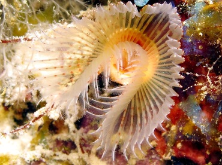
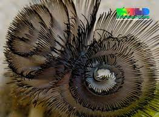
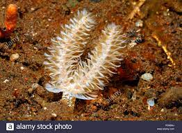

Animals without a backbone are invertebrates. Most invertebrates are in
the phylum Arthropoda. Invertebrates serve as food for humans; are key
elements in food chains that support birds, fish, and many other
vertebrate species; and play important roles in plant pollination. Despite
providing important environmental services, invertebrates are often
ancillary in wildlife research and conservation, with priority given
instead to studies that focus on large vertebrates. In addition, several
invertebrate groups (including many types of insects and worms) are viewed
solely as pests, and by the early 21st century the heavy use of pesticides
worldwide had caused substantial population declines among bees, wasps,
and other terrestrial insects.



Horseshoe worm, phylum name Phoronida, a small group (about 12 species) of
wormlike marine invertebrates that live in tubes secreted by special
glands. These protective tubes become encrusted with shells or are buried
in sand. Horseshoe worms, or phoronids, either are solitary or occur in
groups of many thousands of individuals; one species is colonial and buds
asexually. The body of the horseshoe worm is elongated and measures from
15 to 200 mm (0.6 to 8 inches) in length. It has a U-shaped gut and nerve,
excretory, and reproductive organs. Feeding is by means of a protrusible
lophophore, a structure at the anterior end that bears a circle or paired
spiral of as many as 1,500 ciliated tentacles. The cilia produce a water
current, and the tentacles trap food particles beneath a flap (epistome)
that covers the central mouth. Groups of lophophores are often grazed on
by fish but are then regenerated.
Some phoronid species have separate
sexes, but others are hermaphroditic (i.e., both male and female organs
occur in the same individual).
>All have free-swimming ciliated larvae.
Although most horseshoe worms are found intertidally or in shallow ocean
regions in temperate zones, their habitats also include tropical regions
and ocean depths. In general, horseshoe worms are uncommon; individuals of
certain species, however, may carpet the bottoms of shallow bays.
Horseshoe worms are of little practical value to man, but their unusual
life cycle and obscure ancestry have made them objects of biological
interest. Get a Britannica Premium subscription and gain access to
exclusive content. Subscribe Now Since their discovery in 1846, horseshoe
worms have been associated with every animal phylum, yet the relationship
of horseshoe worms to other animals remains controversial. They have not
been preserved as fossils in the geological record, although fossil tubes
(called Scolithus) may belong to horseshoe worms. Embryological stages
often are useful in relating animal groups, but the actinotroch larva of
horseshoe worms is unique.
characteristics of invertebrate
The trait that is common to all invertebrates is the absence of a
vertebral column (backbone): this creates a distinction between
invertebrates and vertebrates. The distinction is one of convenience only;
it is not based on any clear biologically homologous trait, any more than
the common trait of having wings functionally unites insects, bats, and
birds, or than not having wings unites tortoises, snails and sponges.
Being animals, invertebrates are heterotrophs, and require sustenance in
the form of the consumption of other organisms. With a few exceptions,
such as the Porifera, invertebrates generally have bodies composed of
differentiated tissues. There is also typically a digestive chamber with
one or two openings to the exterior.
The body plans of most multicellular organisms exhibit some form of
symmetry, whether radial, bilateral, or spherical. A minority, however,
exhibit no symmetry. One example of asymmetric invertebrates includes all
gastropod species.This is easily seen in snails and sea snails, which
have helical shells. Slugs appear externally symmetrical, but their
pneumostome (breathing hole) is located on the right side. Other
gastropods develop external asymmetry, such as Glaucus atlanticus that
develops asymmetrical cerata as they mature.
The origin of gastropod
asymmetry is a subject of scientific debate.[12] Other examples of
asymmetry are found in fiddler crabs and hermit crabs. They often have one
claw much larger than the other. If a male fiddler loses its large claw,
it will grow another on the opposite side after moulting.
Sessile animals
such as sponges are asymmetrical[13] alongside coral colonies (with the
exception of the individual polyps that exhibit radial symmetry);
alpheidae claws that lack pincers; and some copepods,
polyopisthocotyleans, and monogeneans which parasitize by attachment or
residency within the gill chamber of their fish hosts).